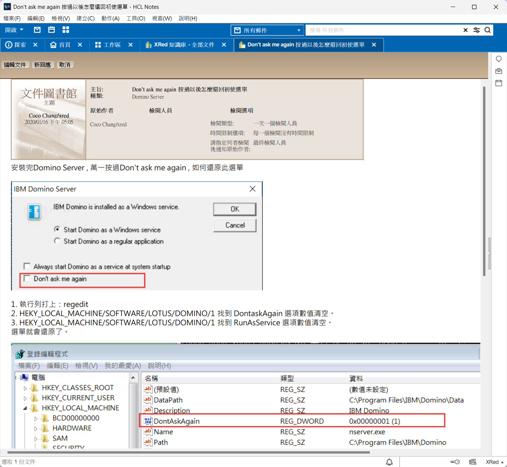
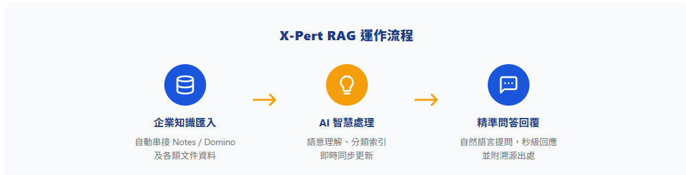
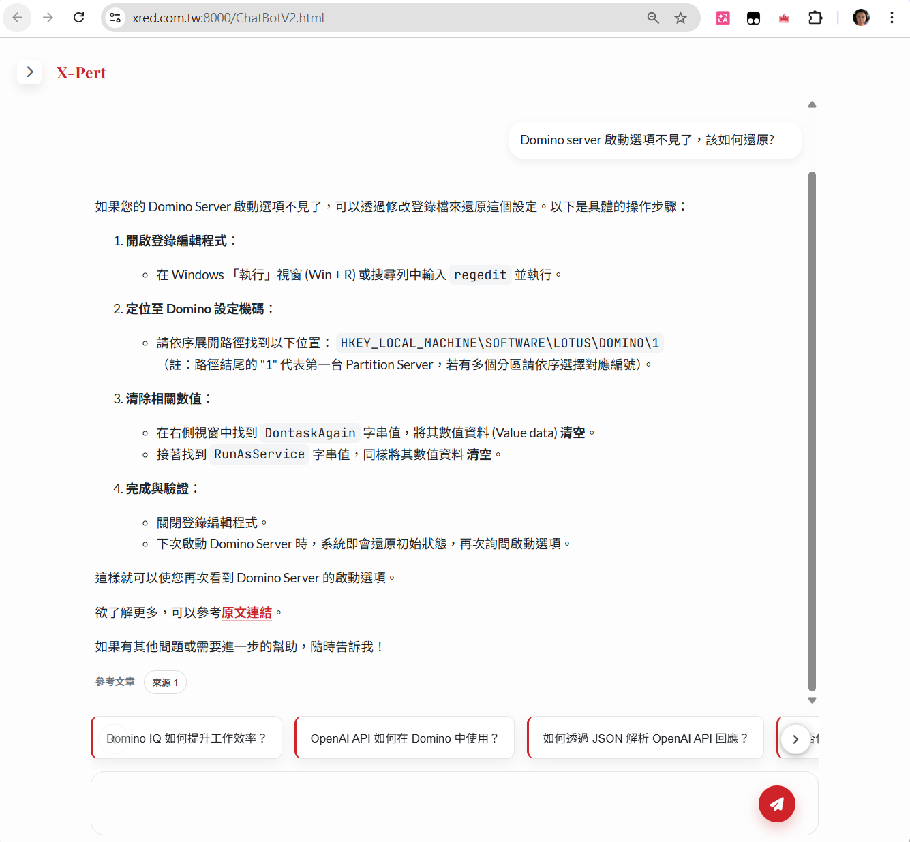
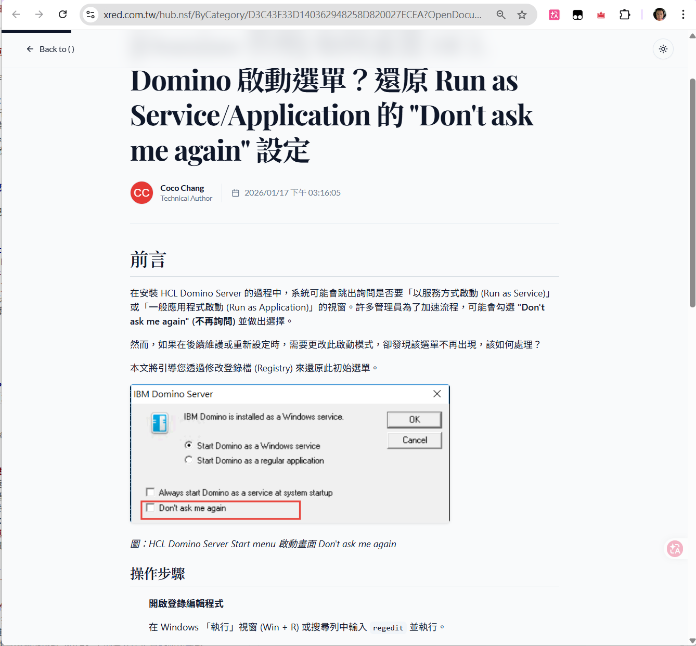
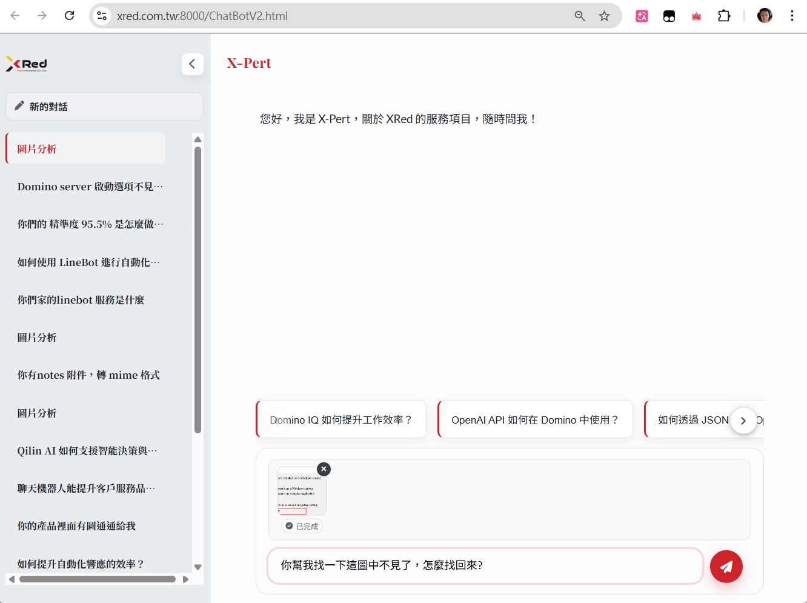
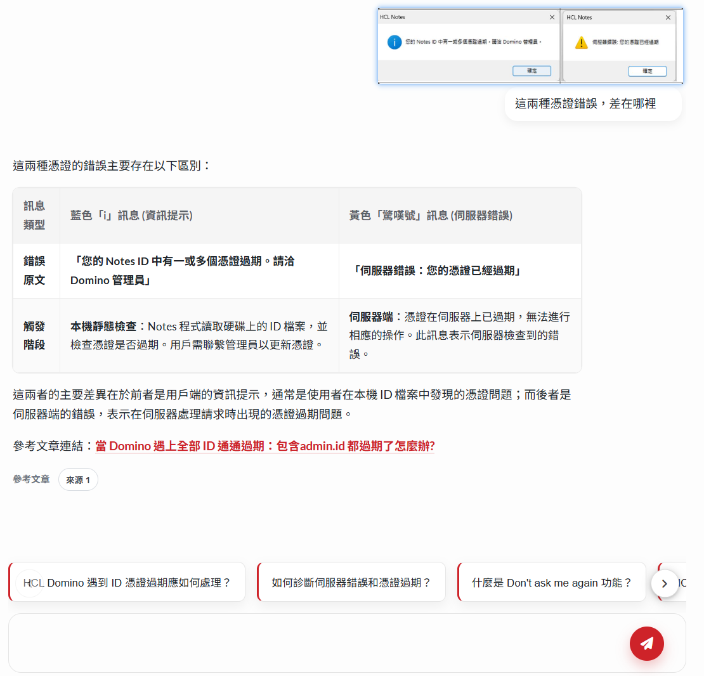
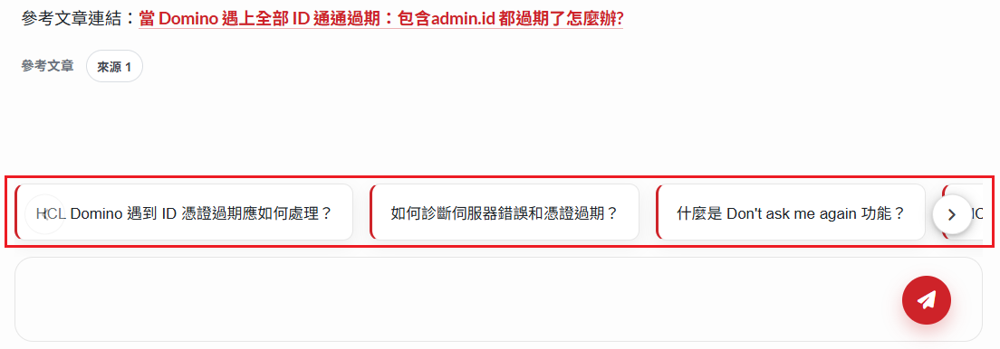
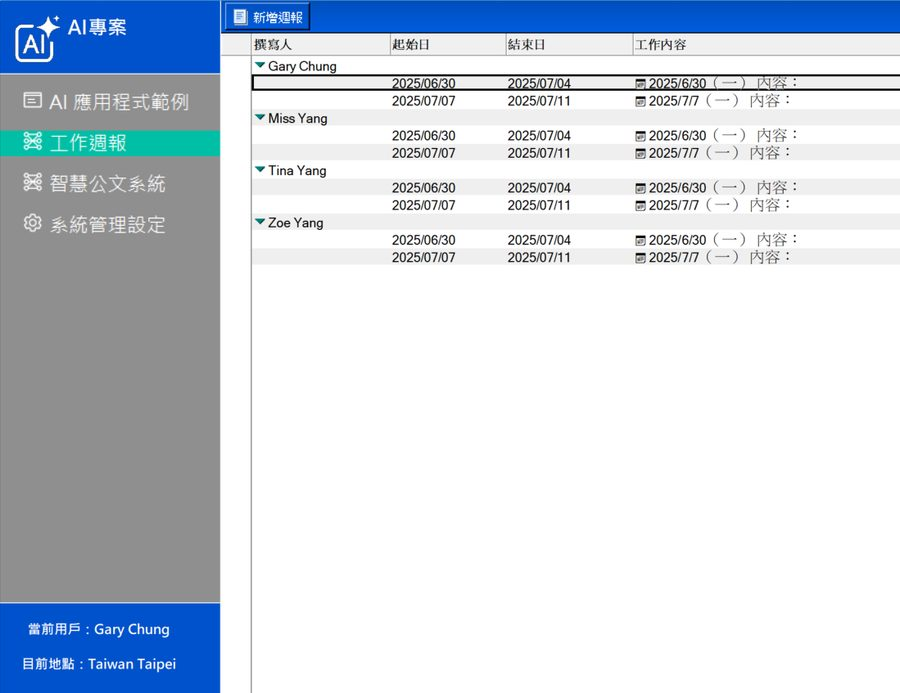

X-Pert RAG
— 企業專屬 AI 知識庫助理
專為 HCL Notes 打造：無縫支援向量轉換，歷史資料立即變身 AI 顧問。
告別手動撈資料！讓您的 Domino 知識庫「活」起來
無論是各式各樣的 Notes 知識庫，或是最早期傳統的「文件庫」應用，都能透過最前端的 RAG 技術與直覺對話介面，讓沉睡的歷史資料即問即答，實現知識調用 100% 全自動化。
痛點情境：為傳統 Domino 系統無痛導入 AI
過去，當團隊想為 Notes Client 內的既有知識庫導入 AI 時，總是面臨巨大的門檻：
無法割捨的 RichText
Notes 裡存放了大量 RichText 格式的歷史文件與圖文，傳統 AI 難以直接解析。
資料重工的高昂成本
為了做 AI 知識庫，往往被迫要把 Domino 的資料全部人工匯出或轉檔，曠日廢時且容易遺失細節。
跨平台搜尋困難
知識散落在不同的資料庫與系統，新進員工得反覆切換系統才能拼湊出完整答案。
現在，有了 X-Pert RAG，保障現有 Domino 投資，無痛升級現有 Notes 應用！
完全「無需轉檔、無縫銜接」，我們透過獨家技術直接讓 Domino 系統內的知識庫「活」起來。

無縫升級！即使是 Notes Client 內充滿歷史痕跡的 RichText 文件，也能成為 AI 最強的知識後盾。
核心功能與成果展示

X-Pert RAG 核心資料流：從 HCL Notes 動態同步，經預處理引擎寫入 Qdrant 向量庫，再由 LLM 彙整生成精準回答，並附上溯源連結回到原始文件。


統整解答與溯源雙管齊下！X-Pert Web 前台不僅能直接為您統整出精準解答，更提供可點擊的來源連結，一鍵跳轉回原始 Notes 系統查看文件全文。
即問即答的「智慧對話」體驗 (智能前台)
告別傳統的搜尋框！我們提供極致流暢的對話介面：
-
stream
串流生成回覆
思考過程即時呈現，不需乾等。
-
psychology
前後文記憶
支援多輪對話，AI 記得你剛剛問過什麼，溝通更自然。
-
image_search
多圖預覽與多模態分析
直接截圖貼上網頁，不僅能讀字、還能讀圖。


專為 Domino 打造的「高命中率檢索大腦」
透過專為 Notes 生態量身打造的 RAG 引擎，不僅回答「有本有據」，更在準確度上達成卓越表現：
- check
零轉檔庫內直讀
直接無縫接軌 Notes 上的各式歷史資料庫與複雜的 RichText 內容，不用經歷資料重工與轉檔工程。
- check
高命中率的核心檢索引擎
在內部核心場景驗證 (PoC Benchmark) 中，搭配雲端大模型可達 95.5% 準確率；地端大模型亦具備 85% 的高水準。
- check
精準同步 Notes「新增 / 修改 / 作廢」狀態
當文件發生變動或被註記作廢時，系統將即時連動並更新後端的 Qdrant 向量資料庫——確保 AI 永遠只依據最新、最有效的資料回答。
- check
現代化閱讀體驗
回覆內容以乾淨表格、圖文連結與清晰格式呈現，大幅提升資訊吸收效率。
為企業海量資料量身調校：X-Pert 專業團隊會依據貴公司的資料量級與文件屬性，提供專屬的 RAG 檢索參數與文本切片 (Chunking) 調校服務，確保系統在海量資料中仍能維持最穩定可靠的回覆品質！
兼具知識引導與「業務破冰」的智慧客服大腦
系統不僅被動回答，更能主動引導使用者：
-
touch_app
AI 智慧選項引導
系統會自動為使用者推薦 6 個最可能想問的快速按鈕，包含技術與服務的提問引導，還能將「請幫我聯絡業務／預約展示」無縫安插在選項中。
-
person_search
個人化興趣分析
從對話中自動抽取使用者的興趣標籤，讓每一次互動都越來越懂你！

應用場景：主管智能幫手 — AI 自動週報
結合 X-Pert RAG 的知識檢索能力與 AI 摘要技術，可自動彙整每週關鍵資訊，生成主管層級的智能週報。系統會從 Domino 資料庫、EIP 待辦與簽核歷程中，自動擷取重要事件並產出結構化摘要，讓主管不必再花時間逐一翻閱。

立即線上體驗 X-Pert RAG 的威力！
百聞不如一見！我們特別開放了公開的實機體驗環境，讓您親手感受系統的檢索速度與完美解析。